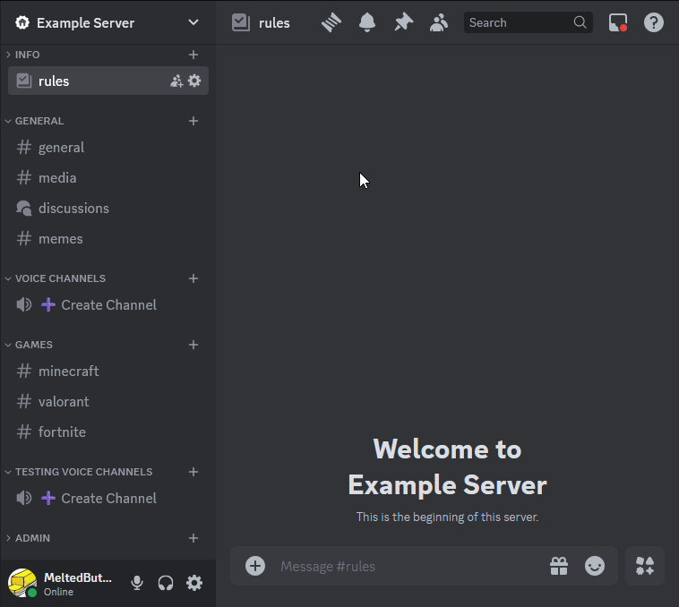
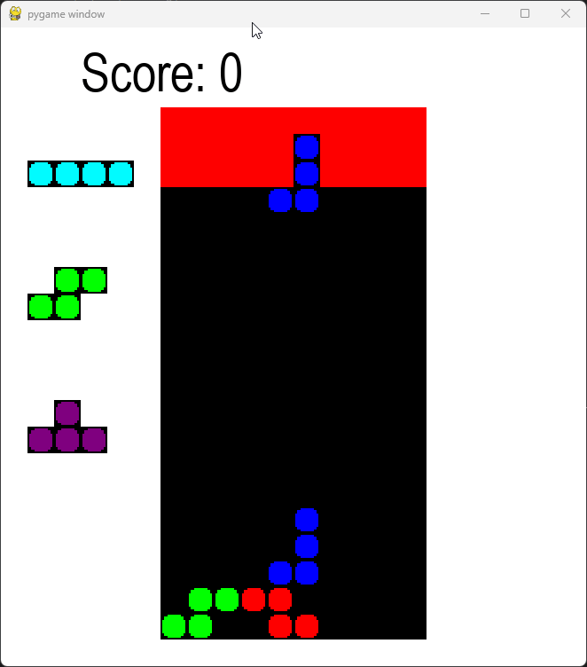
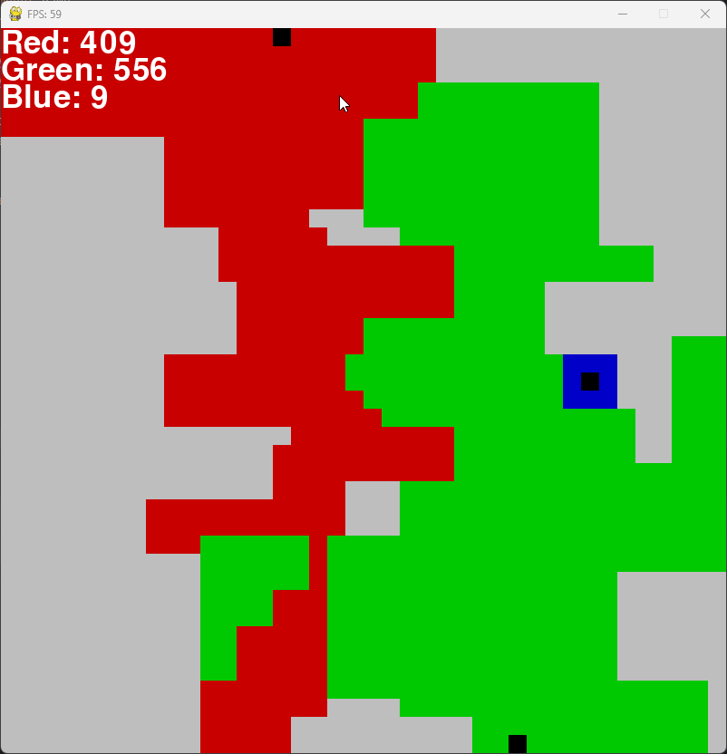

About Me
Hi, I'm Jack Schultz, a student passionate about programming and technology. I've been coding since early 2021 and have experience working with various programming languages such as Python, JavaScript, and C. I enjoy building software projects that solve interesting problems and teaching what I know to other students. All of my major projects have been using a coding language or library i w ass unfamiliar with, this has allowed me to develop skills enabling me to learn on the go.
Hobbies: Volleyball, Coding, Networking, Cycling, Learning Spanish, Robotics, Reading, and Gaming.
Achievements
- PAC Colin Hassell Scholarship
- Established School Coding CoCoricular
- Robotics Club Mentor
- Clarnett Family Ethics Award
- Belonging Award
- Volleyball Coaches Award
Skills
Proficient Coding Languages
- Python
- C++
- SQL
Coding Languages I Have Used
- TypeScript
- Java
- C#
- HTML, CSS & SCSS
Tools
- Git & GitHub
- JetBrains IDEs
- Pygame
Technologies I Have Used
- Databases (SQL, MongoDB)
- RESTful APIs
- WebSocket connections
Personal Projects
-
1. Discord Bot (>120 servers)
I host a Discord bot (named "Dr Robotnic") on my own server and currently services over 120 discord guilds (chatrooms). It provides functionality to dynamically create voice channels for users as they are needed. This declutters the chatroom and gives user's control over their personal voice channel.
Languages: Python, SQLite, HTML and SCSS
Libraries: Discord.py
Read More View on Discord.com GitHub
-
2. Home Server
I bought a mini-computer to host my Discord Bot, Minecraft servers and Nextcloud.
Relevance: This project has given me a better understanding of the Linux operating system, docker, docker-compose and general networking knowledge about modems, routers, VPNs, DNS traffic, IP Addresses, Forwarding Ports, Domains, Reverse Proxies, Tunneling through Cloudflare and remote management of a non-desktop machine through the command line.
Technologies: Linux & Docker
Read More Online Minecraft Server Map -
3. Tetris Clone
Created a classic Tetris game with the ability to hold one piece. Written in Python using the Pygame-ce library.
Relevance:
Language: Python
Libraries: Pygame-ce Framework
Read More Play on Itch.io GitHub
-
4. Minecraft Pet Protection Plugin (>100 Downloads)
This Minecraft plugin prevents players from accidentally harming their tamed pets and disables fall damage for pets, offering better protection and safety during gameplay.
Relevance: The main focus of this project was to learn the basics of Java by activly applying what I learnt through the Spigot API.
Language: Java
Libraries: Minecraft Spigot Library
View Online View on GitHub -
5. Paper.io Clone
A simple game in which multiple players battle over control of the background by enclosing areas to fill it with your team's color. Written in Python using the Pygame-ce library.
Relevance: The main focus of this project was to focus on solving more complicated problems, my favourite 2 were figuring out how to fill the area drawn by a player's tail and how to make the player move smoothly instead of 20 pixels every x milliseconds.
Language: Python
Libraries: Pygame-ce Framework
Read More View on GitHub
-
6. Arduino Claw Arm
a simple set of servo motors that can be used to control a claw arm and move it forward and backwards coded in C++.
Relevance: Working with a real-world physical object taught me about being flexible in my coding approach and allowing for unexpected behaviour.
Language: C++
Libraries: Arduino
Read More View on GitHub
Experience
-
250 Hours building on Autocode in JavaScript
Autocode allowed for in-web editing of projects and active collaboration. I spent many hours within this community spending 250 hours developing my own projects like a moderation discord bot which gained over 10,000 downloads. Furthermore, I became involved in the community and was recognised as a "Community Hero" teaching others how to create their own projects.
Technologies: JavaScript, REST Api, Discord.js
Contact: Keith Horwood for more details: keith.w.horwood@gmail.com
Read More -
Established a new Coding co-curricular during High School
Language: Python
Technologies: PyGame Framework
Contact: Mr Will Ellis for more details: wellis@pac.edu.au
Read More Coding Club GitHub -
Roblotics Club Mentor
I joined the Robotics Club early in my second year at PAC and 3D modeled our team's designs and wrote the code to control it. During my second year i became a team leader. I organised which members of my team were to complete which tasks and married each part together. In my last year of Secondary school, i returned as a mentor due to more limited free time from academics. I taught students how to problem solv using 3D modling softwars like inventor and audocad. Furthermore i assisted in teaching electronics and wiring robots together.
Languages: Python, C
Technologies: CAD, Electronics, Ardiuno
Contact: Mr Neptune Tang for more details: ntang@pac.edu.au
Read More
Volunteer Work
- Fork Tree
- Mary Magdelane
Education
Prince Alfred College - International Baccalaureate Diploma Programme Graduate
Relevant High School Subjects:
- IB Mathematics (Analysis and Approaches)
- IB Physics
- IB Spanish Ab Initio
- IB Economics Higher Level
- IB English Literature Higher Level
- IB Design Tech (Product Design) Higher Level
- Year 10 Systems and Control
- Year 10 Computer Aided Design
Certificates:
- International Baccalaureate Diploma
- AIL Madrid A1 Spanish Certificate
Contact
Feel free to reach out to me via the following platforms:
- Email: jackaustinschultz@gmail.com
- LinkedIn: linkedin.com/in/jack-schultz-576379323/
- GitHub: github.com/Jack-Schultz